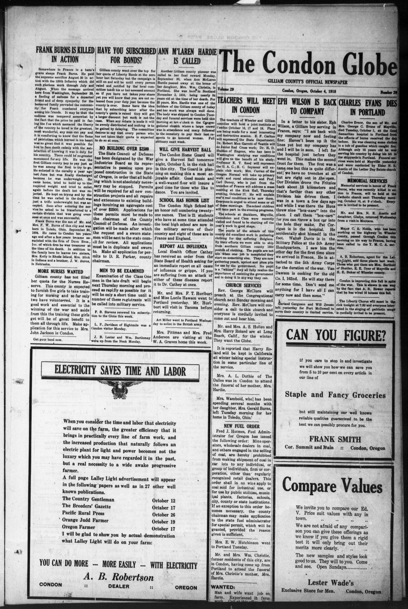
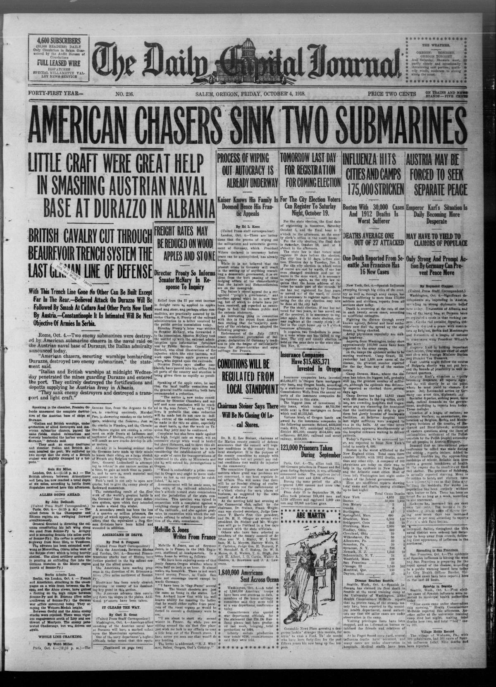
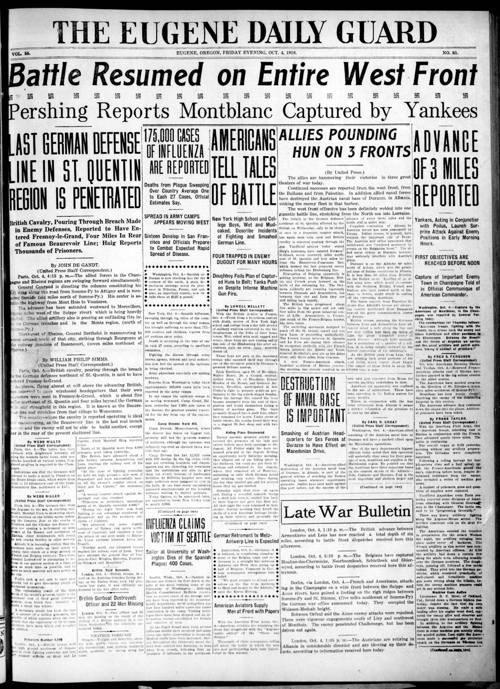
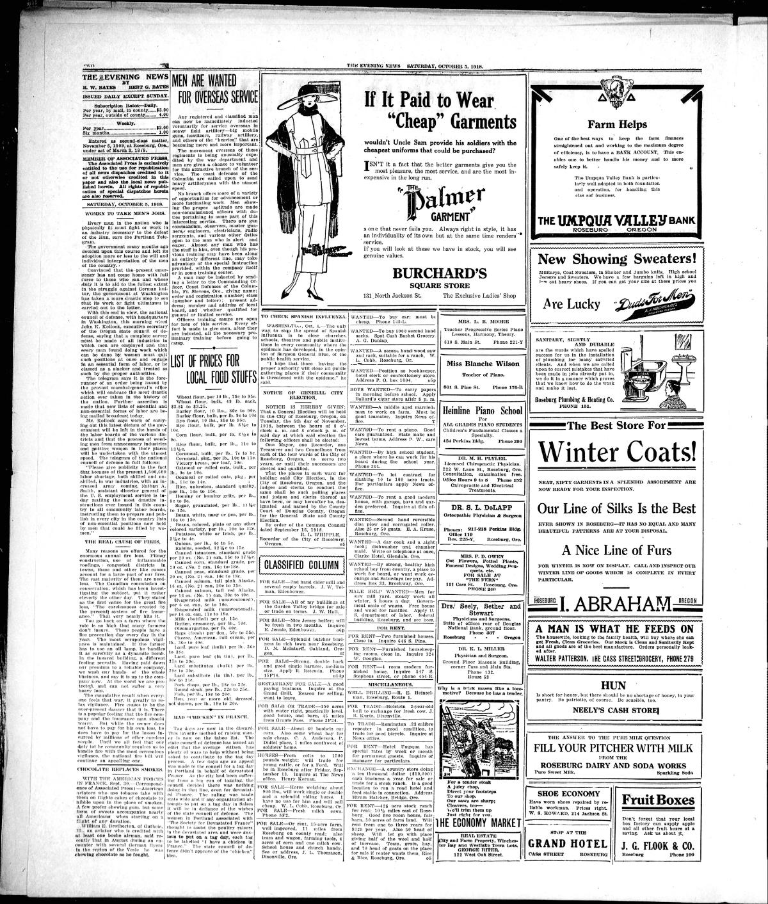
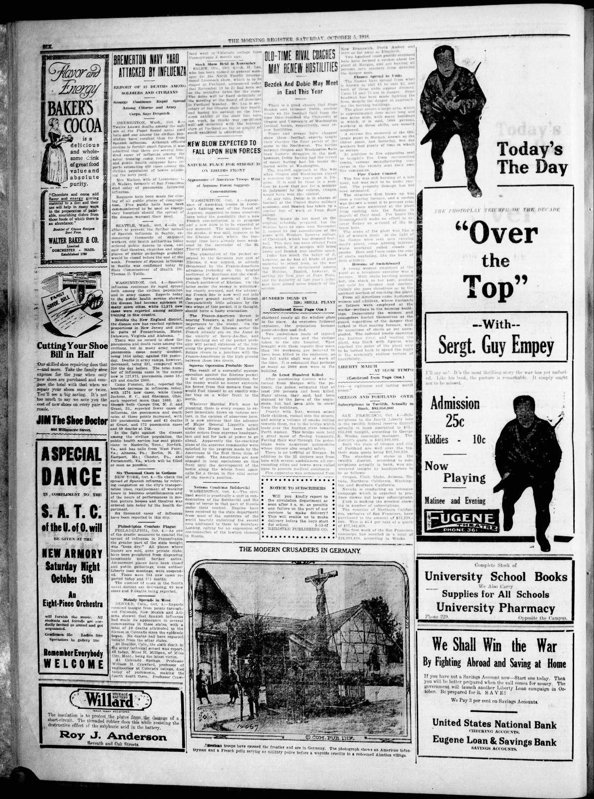

HN HN-410 · October 4, 1918 · Medicine & Public Health > Epidemics, Pandemics & Infectious Diseases > Influenza
Source: Indianapolis News, p. 27 — original page; CDC pandemic history.
Report: Under a headline about closing public places, the paper described crowded hospitals, shortages of medical staff, and thousands of workers absent at the Hog Island shipyard as influenza spread. Restricting gatherings was becoming an emergency public-health tool.
Assessment: This is an authentic report of the 1918 influenza pandemic, later estimated by CDC to have caused roughly 675,000 U.S. deaths and at least 50 million worldwide. The specific shipyard absence figure is a contemporary operational report, not a verified census of infections. There was no influenza vaccine then.
Authentic images retrieved from Historic Oregon Newspapers (University of Oregon). Article crops are located using the archive's own OCR word coordinates and rendered at native crop resolution; article clips are assembled from the archive's own article-block images; page scans are reduced-size access renditions. No images were generated, mocked, or retouched.





Not yet acquired. Queued for provider-specific acquisition testing (see source-acquisition manifest).
URL (preserved verbatim): https://newspapers.library.in.gov/?a=d&d=INN19181004-01.1.27
Saved research report: Historical_Newspaper_Event_Research_403-427_2026-10-23.md
Evidence note: A newspaper report means a historical publication made a claim; it does not establish that claim as fact. Contemporary reporting is separated from later scholarly context and our own assessment.